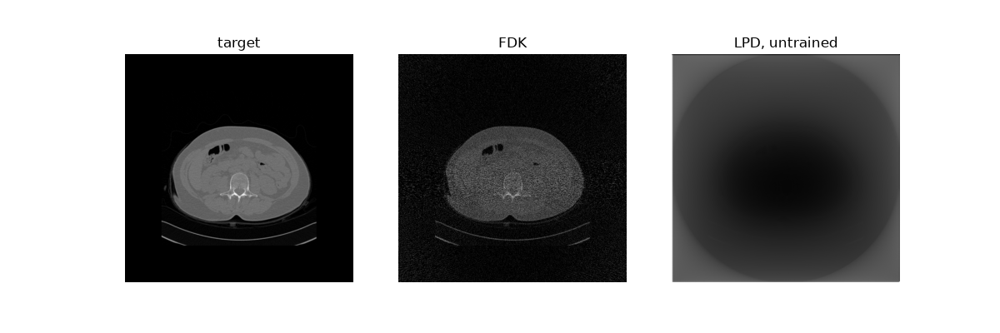

Note
Go to the end to download the full example code.
Models¶
LION’s models are torch modules (LIONmodel, a torch.nn.Module) with a
little more: their parameters, the operator they use, how they start, how
they normalise, where they come from (cite()), and saving and loading with
all of that. This tutorial makes models of each kind and runs them on a
sample, untrained: training is the next tutorials’.
Previous: Data and experiments. Next: Supervised training.
Needs a GPU and the processed LIDC-IDRI data in LION_DATA_PATH.
The kinds of models¶
LION.models has them by kind:
post_processing: clean up a reconstruction (FBPConvNet, …);iterative_unrolled: unrolled optimisation through the operator (LPD, LG, ItNet, cLPD);learned_fbp: learned filtered backprojection (DeepFBP, FusionFBP, DeepFusionBP);CNNs: image-to-image networks, e.g. denoisers (U-Net, MSD-Net, DnCNN, DRUNet);PnP: denoisers for Plug-and-Play (the gradient-step denoiser);learned_regularizer: regularisers (AR, ACR).
Here, a sample of LION’s low-dose experiment to run them on:
import matplotlib.pyplot as plt
import torch
from LION.experiments import ct_experiments
from LION.utils.device import default_device
device = default_device()
experiment = ct_experiments.LowDoseCTRecon()
sinogram, image = experiment.get_dataset("validation")[0]
sinograms = sinogram[None] # a batch of one: models take batches
Models with an operator¶
A model that uses the operator takes its parameters first, then its own
(default_parameters() if not given). LPD takes the measurements and
projects and backprojects through the operator at each iteration:
from LION.models.iterative_unrolled.LPD import LPD
from LION.models.LIONmodel import ModelInputType
lpd = LPD(experiment.operator_params).to(device)
print(lpd.model_parameters.model_input_type) # it takes sinograms
with torch.no_grad():
print(lpd(sinograms).shape)
ModelInputType.SINOGRAM
torch.Size([1, 1, 512, 512])
Where it starts is its initial reconstruction: the operator’s default (FDK for CT) unless set otherwise, e.g. to SIRT:
import functools
from LION.operators.ct import sirt
print(lpd.model_parameters.initial_reconstruction)
lpd.set_initial_reconstruction(functools.partial(sirt, num_iterations=50))
<function fdk at 0x7f30d0df9580>
FBPConvNet cleans an FDK reconstruction with a U-Net. It takes the measurements and reconstructs them itself:
from LION.models.post_processing.FBPConvNet import FBPConvNet
fbpconvnet = FBPConvNet(experiment.operator_params).to(device)
with torch.no_grad():
print(fbpconvnet(sinograms).shape)
torch.Size([1, 1, 512, 512])
Models of images¶
Image-to-image models have no operator: they take only their own parameters.
A solver or reconstructor gives them the initial reconstruction of the
measurements as input (model_forward):
from LION.models.CNNs.UNets.Unet import UNet
from LION.optimizers.LIONsolver import model_forward
unet = UNet().to(device)
print(unet.model_parameters.model_input_type == ModelInputType.IMAGE)
op = experiment.operator_params.make_operator()
with torch.no_grad():
output = model_forward(unet, sinograms, op) # FDK, then the U-Net
print(output.shape)
True
torch.Size([1, 1, 512, 512])
Their parameters¶
Every model’s default_parameters() lists what can be set; a model keeps
them as model_parameters. Methods from papers default to the paper’s.
from LION.models.CNNs.drunet import DRUNet
print(DRUNet.default_parameters())
parameters = DRUNet.default_parameters()
parameters.use_noise_level = True # take the noise level as an input
drunet = DRUNet(parameters).to(device)
model_input_type : ModelInputType.IMAGE
initial_reconstruction : default
in_channels : 1
out_channels : 1
int_channels : 64
kernel_size : (3, 3)
n_blocks : 4
use_noise_level : False
bias_free : True
act : leaky_relu
enforce_positivity : False
A denoiser that takes the noise level is given it as noise_level: one
number, or one per image.
The authors’ trained DRUNet (on natural images) is one call away, a 130 MB download:
Normalisation¶
Networks prefer inputs in a set range. set_normalisation sets how a
model’s inputs are normalised (and its outputs mapped back): “sample” (each
image by its own range), “dataset” (by the range over a dataset’s targets),
“custom” or “none”. It is saved with the model, and LION’s solvers and
reconstructors apply it; called by hand, model.normalise(x) and
model.unnormalise(x) do it.
unet.set_normalisation("custom", data_range=(0.0, 2.5))
print(unet.model_parameters.normalisation)
type : custom
range : [0.0, 2.5]
Citing¶
A model from a paper says where it comes from:
print(lpd.cite("MLA"))
print(FBPConvNet.cite()) # BibTeX
Adler, Jonas, and Öktem, Ozan.
"Learned primal-dual reconstruction."
IEEE transactions on medical imaging
37.6 (2018): 1322-1332.
@article{jin2017deep,
title={Deep convolutional neural network for inverse problems in imaging},
author={Jin, Kyong Hwan and McCann, Michael T and Froustey, Emmanuel and Unser, Michael},
journal={IEEE transactions on image processing},
volume={26},
number={9},
pages={4509--4522},
year={2017},
publisher={IEEE}
}
Your own torch module¶
Any torch.nn.Module becomes a LION model with TorchModel, and is then
saved, loaded and trained like LION’s (Extending LION
writes a LIONmodel):
from LION.models.torch_model import TorchModel
model = TorchModel(
torch.nn.Conv2d,
{"in_channels": 1, "out_channels": 1, "kernel_size": 3, "padding": 1},
).to(device)
with torch.no_grad():
print(model(image[None].to(device)).shape)
torch.Size([1, 1, 512, 512])
Untrained, these reconstructions are noise:
fig, axes = plt.subplots(1, 3, figsize=(12, 4))
with torch.no_grad():
shown = [
("target", image),
("FDK", op.default_reconstruction(sinogram.to(device))),
("LPD, untrained", lpd(sinograms.to(device))[0]),
]
for ax, (title, x) in zip(axes, shown):
ax.imshow(x[0].cpu(), cmap="gray")
ax.set_title(title)
ax.axis("off")

SIRT: 0%| | 0/1 [00:00<?, ?sample/s]
SIRT: 100%|██████████| 1/1 [00:01<00:00, 1.43s/sample]
SIRT: 100%|██████████| 1/1 [00:01<00:00, 1.43s/sample]
Total running time of the script: (0 minutes 31.041 seconds)